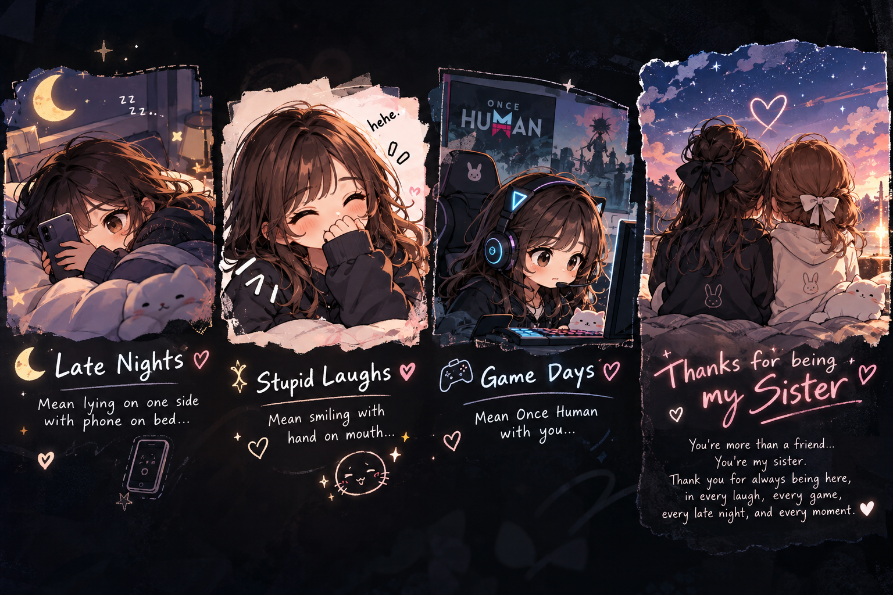
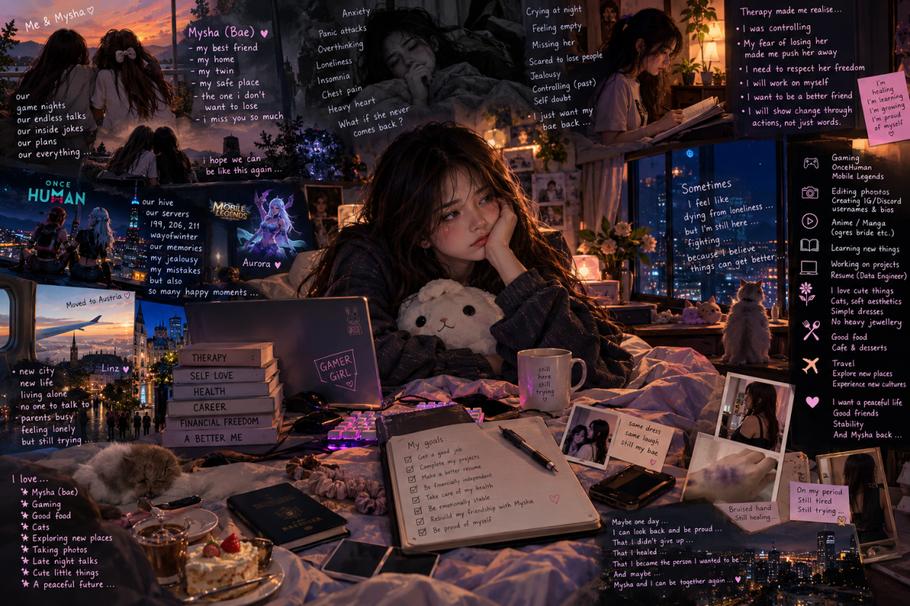

a story that was never easy to put into words
Some people become
home.
This isn't a story about perfect people. It's about two people, the memories between them, the mistakes, the silence, and everything I finally understood.
↓ read our storythe beginning
Before everything
got complicated.
There was a time when talking to you felt effortless. Games became longer, conversations became deeper, and somehow an ordinary friendship became something that felt like family.
I didn't know then how much those little moments would mean to me later.
“Sometimes you don't realize a moment is a memory until it becomes one.”
the good parts
Little moments.
Huge memories.

The laughs. The random conversations. The game nights. The moments where nothing special was happening, yet somehow everything felt right.
Those are the memories I don't want to erase. They mattered. You mattered.
where I went wrong
I was afraid
of losing you.
And that fear changed the way I behaved. I became controlling. Jealous. I worried about who you talked to and who joined our space. I thought holding tighter would keep you close.
Instead, I understand now that love and friendship need room to breathe. You deserved your freedom, and I didn't understand that enough then.
the realization
Sometimes losing
someone makes you
finally listen.
The distance forced me to look at myself instead of only looking at what I had lost.
I started understanding things from your side. I started seeing the parts of my behavior I couldn't see while I was scared. And I realized that saying “I care about you” isn't enough if my actions make you feel trapped.
a picture of this chapter
Everything I couldn't
put into words.
The memories, the loneliness, the mistakes, the healing, the things I still love, and the person I'm trying to become.

Maybe one day I'll look back at this chapter and be proud that I didn't give up on becoming better.
the silence
Some days felt
very long.
Silence has a strange way of making every memory louder. I missed you. I wanted to reach out. But I also knew that respecting your space had to mean something.
So I waited. Not because I stopped caring, but because caring also means respecting another person's choice.
the thing I want to ask
Just 30 minutes.
Hey bae,
I don't want to write a hundred messages or keep asking again and again.
I'm only asking for one honest conversation. 30 minutes. I want to listen to whatever you have to say—not argue, not force you, not convince you.
I realized something. Maybe this is what you wanted me to realize all along.
After those 30 minutes, it's your choice. Whatever you decide, I will respect it.
— Cassy ♡
the last page isn't an ending
Thank you for
being my sister.
Whatever the future looks like, the good memories were real. And I will always be grateful that our paths crossed.
↑ back to the beginning